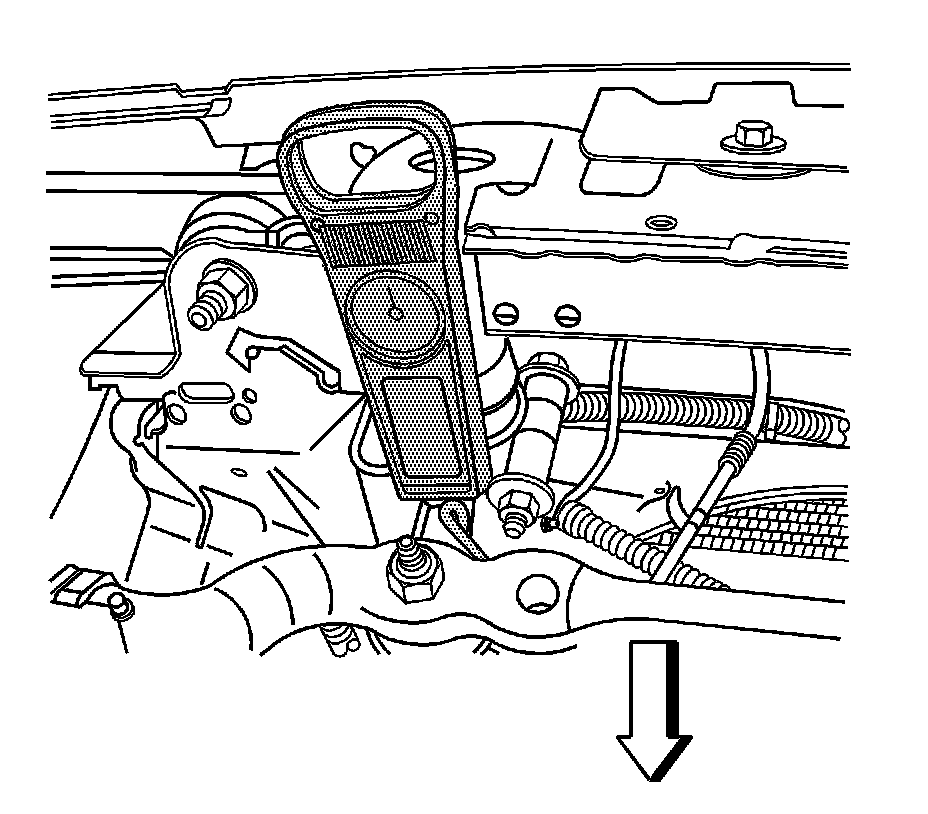
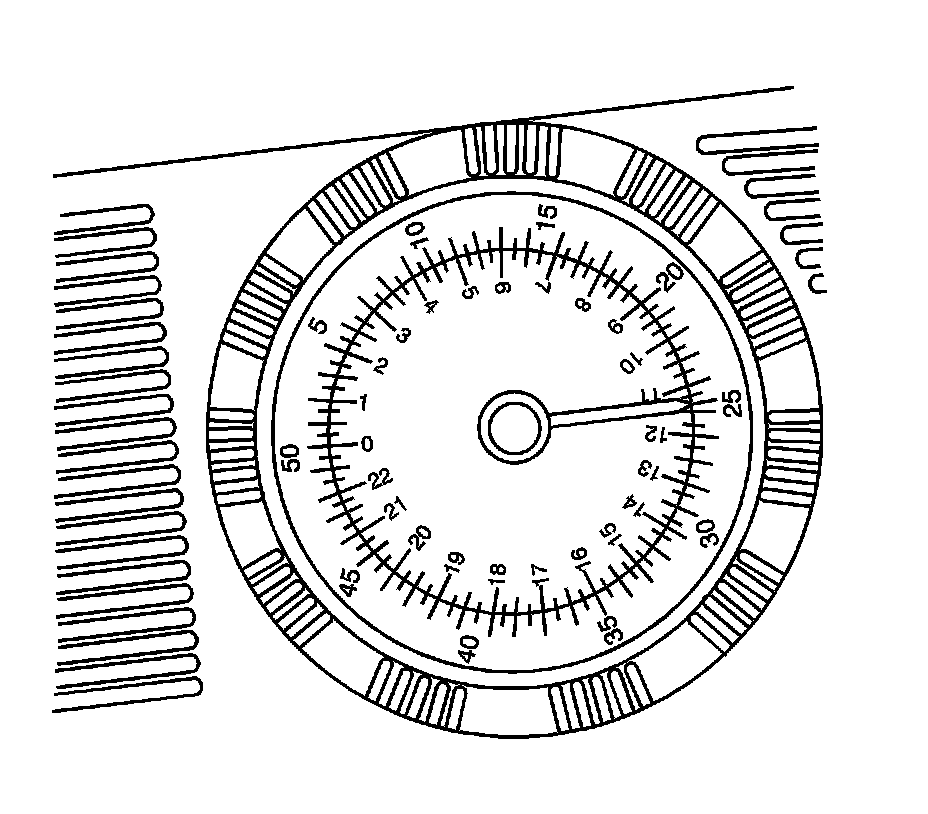
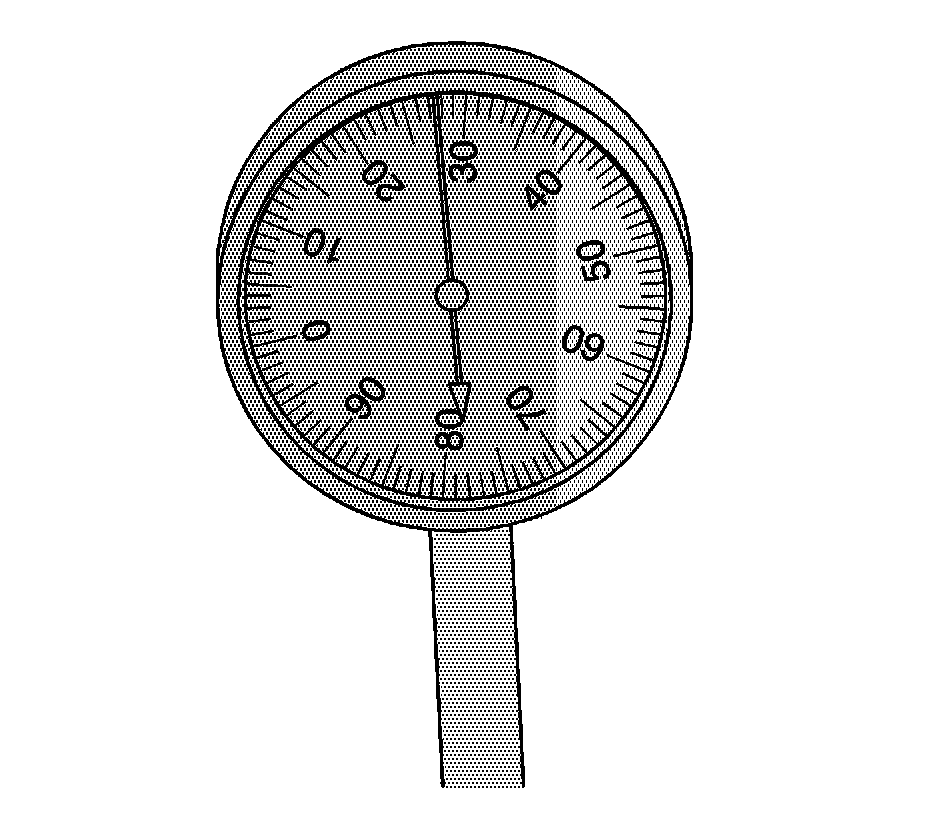
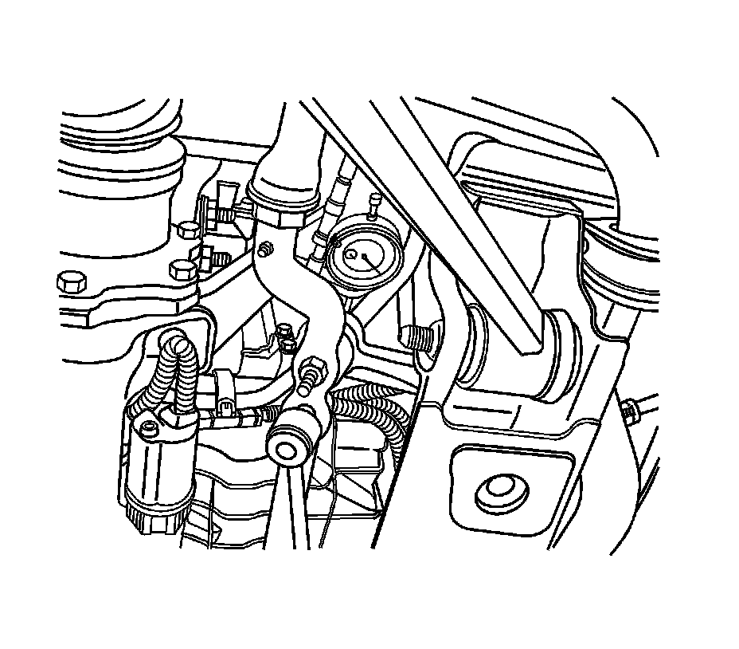

Idler Arm: Testing and Inspection
Idler Arm Inspection
Tools Required
^ J 35999 Spring Scale
^ J 42640 Steering Column Anti-Rotation Pin
^ J 45101 Hub and Wheel Runout Gage
1. Raise the vehicle on a hoist and support it with jackstands. Refer to Lifting and Jacking the Vehicle.

Notice: The wheels of the vehicle must be straight ahead and the steering column in the LOCK position before disconnecting the steering column or intermediate shaft from the steering gear. Failure to do so will cause the SIR coil assembly to become uncentered, which may cause damage to the coil assembly.
2. Position the wheels in a straight-ahead position and install the J 42640.
3. Install the dial indicator J 45101 between the idler arm and the vehicle frame.
Ensure the gage is at zero before taking the measurement.

4. Place a J 35999 near the relay rod end of the idler arm.

5. Exert a 110 N.m (25 lb) force upward and then downward while measuring the total distance the arm moves.

6. If the movement exceeds 2 mm (0.078 in) replace the idler arm.

7. Install the dial indicator at the idler arm.
8. Push the tire inward slowly with one hand to remove any lash.
Zero out the dial indicator and pull outward in order to take a reading.
9. Allow only 1 mm (0.039 in) of movement at the idler arm ball stud.
If more than 1 mm (0.039 in) exists replace the idler arm.